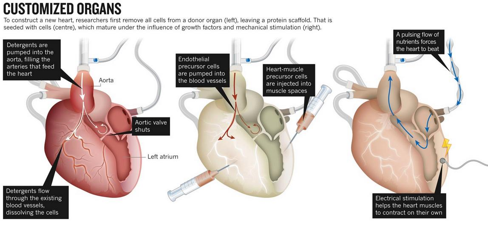

| Importancia del corazon |
El corazón bombea sangre a todas las partes del cuerpo. La sangre suministra oxígeno y nutrientes a todo el cuerpo y elimina el dióxido de carbono y los elementos residuales. A medida que la sangre viaja por el cuerpo, el oxígeno se consume y la sangre se convierte en desoxigenada.
|
 |
| Uso del corazon |
|
El corazón bombea sangre a todas las partes del cuerpo. La sangre suministra oxígeno y nutrientes a todo el cuerpo y elimina el dióxido de carbono y los elementos residuales. A medida que la sangre viaja por el cuerpo, el oxígeno se consume y la sangre se convierte en desoxigenada.
|
| Costo y fabricacion del corazon |
La primer patente de un corazón artificial fue registrada por el estadounidense Paul Winchell en 1963, quien le cedió la misma a la Universidad de Utah, donde el científico Robert Jarvik desarrolló el primer prototipo del Jarvik-7. Carmat ha confirmado que cada unidad cuesta 150.000 euros y está diseñada para reemplazar un corazón real, pero durante un tiempo limitado: el fabricante ha señalado que en los ensayos clínicos realizados hasta el momento, solo uno de los trasplantados ha logrado sobrevivir más de dos años.
|  |
| Opinion |
|
Como conclusión principal el corazón es uno de los órganos más importantes del cuerpo humano ya que es el músculo más fuerte que distribuye sangre a todo nuestro organismo y es que de no ser por ella no existiría la vida.
|